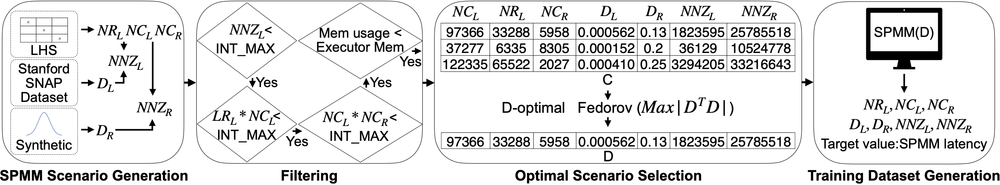

1-1. Install Docker on Amazon EC2(Ubuntu18.04, t2.medium, 20GB)
# Install Docker
sudo apt-get update -y
sudo apt-get remove docker docker-engine docker.io
sudo apt-get install docker.io -y
sudo service docker
start sudo chmod 666
/var/run/docker.sock sudo usermod -a -G docker ubuntu
1-2. Run Container
# Run the container using the Tensorflow 2.5.0 image
sudo docker pull tensorflow/tensorflow:2.5.0
sudo docker run -it tensorflow/tensorflow:2.5.0 bash
1-3. Setting
# Update information about available packages and their versions
apt-get update -y
# Install Packages
apt-get install git -y
DEBIAN_FRONTEND=noninteractive apt-get install r-base -y
# Git Clone
cd home
git clone https://github.com/kmu-bigdata/dos.git
# Install Python Packages
cd dos
pip install -r requirements.txt
1-4. Data Generation
cd data-generation
# Proceed with the SPMM Scenario Generation, Filtering,
# and Optimal Scenario Selection process as shown in the figure above
./generate-and-optimize-lhs-data.sh
# Proceed with the Training Dataset Generation process shown in the figure above.
# SPMM based on /data/optimal-lhs-data.csv
# Split SPMM data into Trainset and Testset
./generate-trainset-testset.sh
2-1. Train DoS
cd ../dos
# Train the model using ../data/train-set.csv
python3 train.py
2-2. Test DoS
# Test the model using ../data/test-set.csv
python3 test.py
2-3. Inference DoS
# Enter matrix multiplication information to check Sparse X Sparse Latency and Sparse X Dense Latency prediction results
python3 inference.py --nr_l 126899 --nc_l 52210 --nc_r 12948 --d_l 0.00182521 --d_r 0.07 --nnz_l 12092788 --nnz_r 47322584
3-1. Setting on Amazon EC2(Ubuntu18.04, t2.medium, 20GB)
# Update information about available packages and their versions
sudo apt-get update -y
# Install Packages
sudo apt-get install git -y
sudo apt-get install awscli -y
# Git Clone
git clone https://github.com/kmu-bigdata/dos.git
3-2. Install Docker
# Install Docker
sudo apt-get remove docker docker-engine docker.io
sudo apt-get install docker.io -y
sudo service docker start
sudo chmod 666 /var/run/docker.sock
sudo usermod -a -G docker ubuntu
3-3. Build Container Image using Dockerfile
# Container images provide the necessary libraries
# and model weights when serving DNN prediction models.
cd dos/microservice
docker build -t "image-name" .
3-4. Create Amazon ECR Repository
3-5. Upload Container Image to Amazon ECR
# Account Setup to Use the AWS CLI
aws configure
# Variable setting
export ACCOUNT_ID=$(aws sts get-caller-identity --output text --query Account)
echo "export ACCOUNT_ID=${ACCOUNT_ID}" | tee -a ~/.bash_profile
# Image tag and push
docker tag "image-name" $ACCOUNT_ID.dkr.ecr."region-name".amazonaws.com/"ecr-name"
aws ecr get-login-password --region "region-name" | docker login --username AWS --password-stdin $ACCOUNT_ID.dkr.ecr."region-name".amazonaws.com
docker push $ACCOUNT_ID.dkr.ecr."region-name".amazonaws.com/"ecr-name"
3-6. Create a AWS Lambda based on Amazon ECR Container Image
3-7. Write a Lambda function that recommends an optimal multiplication method based on matrix multiplication information
3-8. Create Amazon API Gateway and connect AWS Lambda trigger
4-1. Setting on Amazon EMR-6.4.0
# Update information about available packages and their versions
sudo apt-get update -y
# Install Packages
sudo apt-get install git -y
# Git Clone
Cd /home/hadoop
git clone https://github.com/kmu-bigdata/dos.git
4-2. Build
# Spark build using Apache Maven
cd dos/spark-3.1.2 && ./build/mvn -pl :spark-mllib_2.12 -DskipTests clean install
4-3. Replace existing MLLib jar file in Amazon EMR with new build jar file
sudo mv /home/hadoop/dos/spark-3.1.2/mllib/target/spark-mllib_2.12-3.1.2.jar /usr/lib/spark/jars/spark-mllib_2.12-3.1.2-amzn-0.jar
4-4. Run Spark
# The easiest way to start using Spark
spark-shell4-5. Simple way to use DOS
import org.apache.spark.mllib.linalg.SparseMatrix
import java.util.Random;
val NumRow_L = 2
val NumCol_L = 3
val NumCol_R = 3
val D_L = 0.001
val D_R = 0.005
val l_sm = SparseMatrix.sprand(NumRow_L, NumCol_L, D_L, new Random(24))
val r_sm = SparseMatrix.sprand(NumCol_L, NumCol_R, D_R, new Random(24))
l_sm.multiply(r_sm)
import org.apache.spark.mllib.linalg.distributed.{CoordinateMatrix, MatrixEntry}
val NumRow_L = 2
val NumCol_L = 3
val NumCol_R = 3
val BlockRow_L = 1
val BlockCol_L = 1
val BlockCol_R = 1
val l_entries = sc.parallelize(Seq((0, 0, 1.0), (1, 1, 2.0), (0, 2, 3.0), (1, 2, 4.0))).map{case (i, j, v) => MatrixEntry(i, j, v)}
val l_block_matrix = new CoordinateMatrix(l_entries, NumRow_L, NumCol_L).toBlockMatrix(BlockRow_L, BlockCol_L).cache
val r_entries = sc.parallelize(Seq((1, 0, 5.0), (2, 0, 6.0), (0, 1, 7.0), (2, 1, 8.0), (1, 2, 9.0))).map{case (i, j, v) => MatrixEntry(i, j, v)}
val r_block_matrix = new CoordinateMatrix(r_entries, NumCol_L, NumCol_R).toBlockMatrix(BlockCol_L, BlockCol_R).cache
l_block_matrix.multiply(r_block_matrix).validate